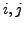
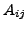

Next: Pixel values
Up: Conventions and style
Previous: Dynamic self-modification
Contents
A large number of Gandalf routines require horizontal and vertical sizes
or coordinates to be passed as arguments, whether representing the dimensions
of a matrix or coordinates of a pixel in an image. The ordering of the
arguments in such cases is problematic. For specifying a matrix element
the most natural ordering is to have the row coordinate first, corresponding
to the coordinate order  for matrix element .
On the contrary, for image coordinates there is no obvious convention.
In Gandalf a universal convention is applied that in all such cases the
vertical or row coordinate is the first argument.
Philip McLauchlan
2009-01-27